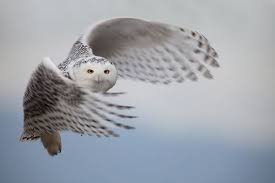
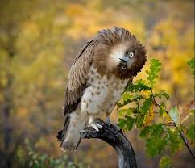
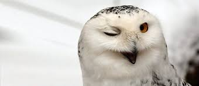

Die Eulen (Strigiformes) sind eine Ordnung der Vögel, zu der ungefähr 200 Arten gezählt werden. Vertreter der Gruppe sind auf allen Kontinenten außer der Antarktis anzutreffen. Die meisten Arten sind nachtaktiv und haben zahlreiche Anpassungen an ihre nächtliche Aktivität entwickelt. Innerhalb der Eulen unterscheidet man die beiden Familien der Schleiereulen (Tytonidae) und der Eigentlichen Eulen (Strigidae).
Eulen besitzen eine sehr typische Gestalt. Als auf die nächtliche Jagd spezialisierte Vögel unterscheiden sich Eulen von anderen Vögeln durch spezifische anatomische Merkmale. Der Körper ist gedrungen und der Kopf, im Vergleich zu dem anderer Vögel, auffällig groß und rundlich. Der Schnabel der Eulen ist stark gekrümmt und scharfkantig.
Die meisten Eulen sind nachtaktiv. Sie jagen in der Nacht und schlafen am Tag. Ausnahmen sind beispielsweise die tagaktive Schnee-Eule, die Sperbereule, die Sumpfohreule oder der oft auch am Tag aktive Sperlingskauz.
Eulen sind vor allem auf nachtaktive Beutetiere spezialisiert. Die von den Eulen praktizierte Jagdtechnik ist dabei artspezifisch, von den jeweiligen örtlichen Gegebenheiten geprägt und auch beuteabhängig. Generell praktizieren die Arten, die im Wald leben, eher eine Ansitzjagd, bei der sie von einer Warte (Ausschauplatz) aus auf Beute lauern. Eulen, die offenere Landschaften bewohnen, jagen durch Pirschflüge, bei der sie aus dem Flug heraus ihre Beute erspähen oder hören. Letzteres gilt beispielsweise für die Schleiereule. Diese greift aber auf die Ansitzjagd zurück, wenn schlechtes Wetter diese Pirschflüge einschränkt. Viele Eulenarten sind außerdem geschickte Bodenjäger, die in der Lage sind, eine am Boden davonhuschende Maus einzuholen.
Für die meisten Eulenarten sind Kleinsäuger wie Mäuse die bevorzugte Beute. Zum Beutespektrum gehören jedoch auch andere Vögel, Fische, Schlangen, Regenwürmer, Schnecken, Fledermäuse, Frösche, Motten und große Käfer. Viele Eulenarten fressen auch Aas, was insbesondere den Uhu bei Untersuchungen seines Gewölles immer wieder auch als Schädling erscheinen ließ, da sich sogar Hirsch- und Rehbestandteile nachweisen lassen. Große Eulen jagen auch andere kleinere Eulenarten. Dies gilt insbesondere für den Uhu, bei dem Waldkauz und Waldohreule einen nicht unerheblichen Beutebestandteil ausmachen.
